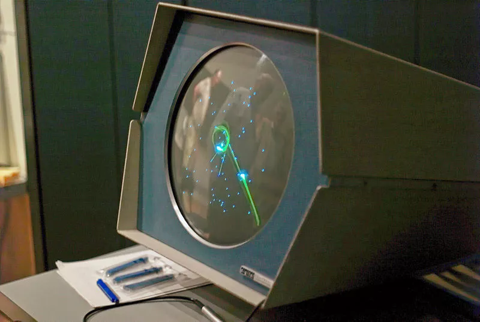
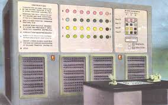
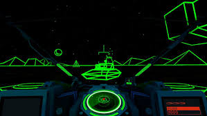

ezen a weboldalon megtekintheti játékok fejlődését.
kezdetben a játékok pixelesek és 2D-sek voltak mint a Nimrod(1951) ugyan ezelőtt is voltak 2D-s játékok mivel az első 2D-s játék 1947-ben jelent meg amit Cathode-Ray Tube Amusement Device-nak hívtak.
Az első 3D-s játékok 1973-tól jelennek meg a mai napig mint például a Battlezone
Cathode-Ray Tube Amusement Device

A legelső játék. Ezt az eszközt Thomas T. Goldsmith Jr. és Estle Ray Mann fizikusok találták fel 1947-ben (a szabadalmat 1948-ban hagyták jóvá). A fejlesztéshez a második világháború radar-technológiáját vették alapul, amelyet a kutatók jól ismertek.
Hogyan működött?
A kijelző: Egy katódsugárcsövet (CRT) használtak, amelyen egy fénypont (az elektronnyaláb) reprezentálta a "rakétát"
Az irányítás: A játékos analóg tekerőgombokkal (potenciométerekkel) állíthatta be a fénypont röppályáját és sebességét.
A cél: A fénypontot egy meghatározott pontra (a célpontra) kellett irányítani.
Grafika helyett maszkok: Mivel a gép nem tudott összetett grafikát rajzolni, átlátszó papírmaszkokat vagy acetátlemezeket helyeztek a képernyő elé, amelyeken repülőgépek vagy más célpontok voltak láthatók.
Ennek ugyan nem lett nagy sikere ugyan mert nem tartalmazott memóriát, processzort se programkódot tehát teljesen analóg volt.
Nimrod
A nimrod játékot egy Brit Ferranti nevezetű cég alapította 1951-ben. Tervezője Jhon Makepeace Bennett volt. Ez a játék egy számítógépes játék volt amelyet a számítógép történetének egyik első kereskedelmi célú számítógépére, a Ferranti Mark 1-re fejlesztettek ki. A Nimrod egy stratégiai játék volt, amelyben a játékosoknak egy halom gyufaszálat kellett eltávolítaniuk, és az nyert, aki utoljára húzott.

játékmenet:
A játékban több kupac tárgy (például gyufaszál) van.
A játékosok felváltva vesznek el tetszőleges számú tárgyat, de csak egy kupacból.
A cél változattól függően vagy az utolsó tárgy elvétele, vagy annak elkerülése (misere játék).
Battlezone
A Battlezone játékot a Midway Manufacturing cég fejlesztette 1973-ban. Ez volt az egyik első 3D-s játék, amely a későbbiekben sokat befolyásolt a játékok fejlődésében.

különlegessége:
A Battlezone játék különlegessége az volt, hogy az első 3D-s játék volt, amely a későbbiekben sokat befolyásolt a játékok fejlődésében.
Vektorgrafika: A korabeli játékokkal ellentétben (amik színes négyzetekből, azaz pixelekből álltak) a Battlezone úgynevezett wireframe (drótvázas) vektorgrafikát használt. A tankokat és a környezetet világító zöld vonalak rajzolták ki egy fekete háttér előtt.
Periszkópos nézet: Az eredeti arcade kabinet egyik változatánál a játékosnak egy fizikai „periszkópba” kellett belenéznie, ami teljesen elzárta a külvilágot, megteremtve ezzel a virtuális valóság (VR) korai élményét.
Irányítás: Két botkormánnyal (joystick) kellett irányítani, pontosan úgy, mint egy valódi lánctalpas tankot (az egyik kar a bal, a másik a jobb lánctalpat vezérelte).